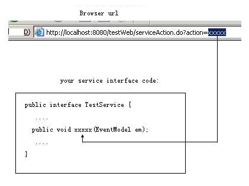

|
Command patern for calling servicesThis function is like the ActionController of Ruby on Rails， the function handles incoming requests from the user's browser and routes them to the correct method of a service class , not a controller class such as Struts's DispatchAction.how to implements? three steps: First step: configure your struts-config.xml:
com.jdon.strutsutil.ForwardAction is the a class of jdon framework, xxxxx is your browser url parameter. Second Step: tell jdon framework:you will call which service(the name of the JavaBeans) :
Last Step: code your service interface:
|
|